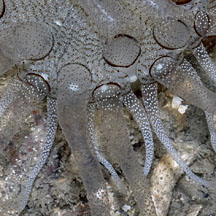
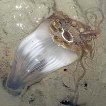
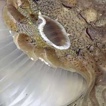
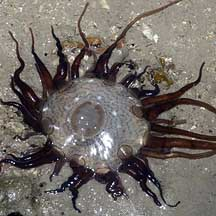
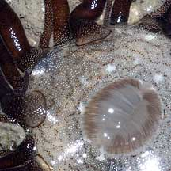

|
|
| sea anemones text index | photo index |
| Phylum Cnidaria > Class Anthozoa > Subclass Zoantharia/Hexacorallia > Order Actiniaria |
| Glass
anemone Dofleinia sp. Family Actiniidae updated Nov 2019 Where seen? This beautiful anemone resembles blown glass and is sometimes seen on sand and near seagrasses on some of our shores. Features: Diameter with tentacles extended 20cm or more. The oral disk 5-8cm in diameter. Tentacles not many. One ring of about 20 long tentacles (10-20cm), another ring of about the same number of shorter tentacles (length about the diameter of the oral disk). The transparent tentacles and oral disk are covered with tiny bumps that are white, sometimes reddish. In some, the bumps are densely grouped. There is a black-and-white ring on the base of the longer tentacles where they attach to the oral disk. The mouth is ringed by white spots. The body column is smooth almost transparent with regular wide smooth fluted ridges along the column length. It does not seem to have bumps (verrucae). The Striped or Armed Anemone (Dofleinia armata) found in Australia is considered extremely dangerous as it can inflict painful stings that take months to heal. |
 Beting Bronok, Jun 10  Rings of long tentacles and short tentacles. |
 Beting Bronok, Aug 05  |
 Beting Bronok, Jun 06  |
| Glass anemones on Singapore shores |
On wildsingapore
flickr
|
| Other sightings on Singapore shores |


 Cyrene Reef, Jun 11 |
 |

 Cyrene Reef, Aug 13 |

Links
References
|